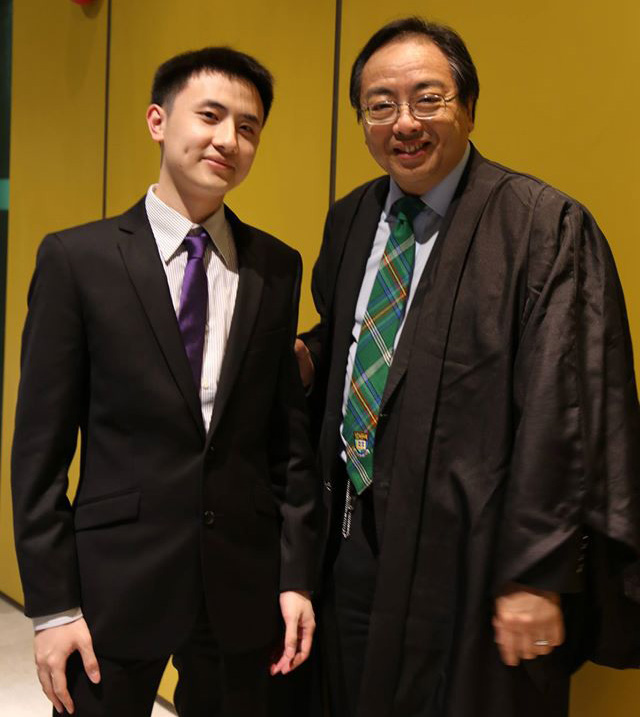
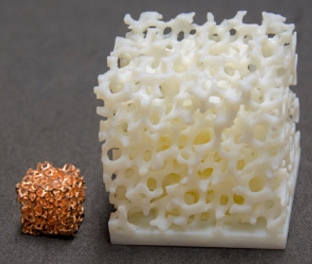
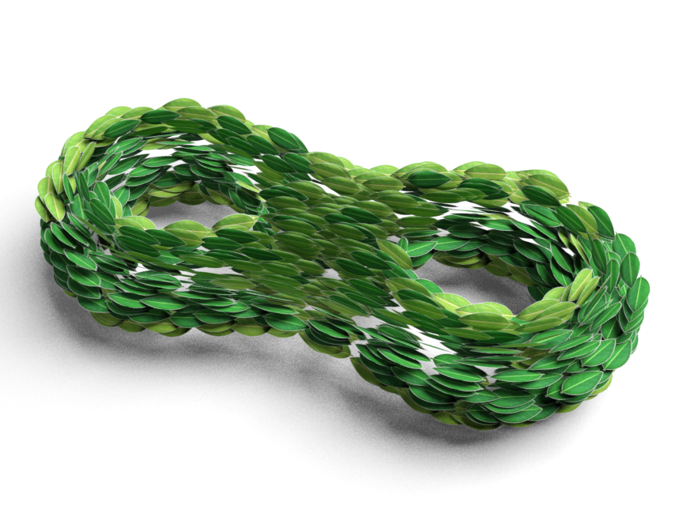
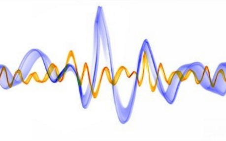

The University of Hong Kong
Office: 401, Chow Yei Ching Building, HKU
E-mail: wkchen at cs.hku.hk
Weikai Chen (陈伟凯)
PhD CandidateThe University of Hong Kong
Office: 401, Chow Yei Ching Building, HKU
E-mail: wkchen at cs.hku.hk
About me
I am a PhD candidate in the Department of Computer Science, The University of Hong Kong. I work at Computer Graphics Laboratory under supervision by Professor Wenping Wang. I have broad interests in geometric modeling, pattern/texture synthesis, 3D object/human reconstruction and the interaction between machine learning and computer graphics. My recent research focuses on intelligent algorithms to generate highly detailed and complex patterns/structures that are ready for digital fabrication.Previously, I received both my Bachelor and Master degree in Electronic Engineering from Tianjin University, in 2010 and 2013 respectively, where my research was wireless communications.
Recent News
- (October 2016) Our work Tensor Field Design in Volumes is accepted by SIGGRAPH Asia 2016 Technical Briefs!
- (July 2016) I gave a talk titled "Synthesis of Filigrees for Digital Fabrication" in ALICE/INRIA Nancy.
- (June - July 2016) I am visiting Dr. Sylvain Lefebvre in ALICE/INRIA Nancy.
- (April 2016) My first graphics paper Synthesis of Filigrees for Digital Fabrication is accepted by SIGGRAPH 2016!
Selected Publications

By Example Synthesis of Three-Dimensional Porous Materials

Tensor Field Design in Volumes

Synthesis of Filigrees for Digital Fabrication

Second-order differential based matching pursuit method for compressive sensing signal recovery

A Compressive Sensing Method for Estimating Doubly-Selective Sparse Channels in OFDM Systems
Others
- Teaching Assistant (2014-2016). COMP7507: Visualization and visual analytics
- Teaching Assistant (2013-2014). CS1117A: Computer Programming
- Reviewer: Pacific Graphics (2015), IEEE Signal Processing Letters (2012)
Selected Awards
- HKU Postgraduate Scholarship 2013-2017
- 2015 Champion of Presentation in Joint-Hall Academic Symposium (Morrison VS St. John's College)
- 2014 Champion of Presentation in 4th Morrison Hall Academic Symposium
- 2012 National Scholarship by Ministry of Education (Top 1%)
- 2010-2013 First-Class Postgraduate Scholarship (Top 5%)
- 2008 Huawei Scholarship (Top 3%)
- 2006-2010 Outstanding Student of Tianjin University
© 2013 Weikai Chen